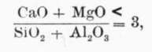
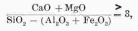

Art. 3. Portland Cement
Description
This section is from the book "Cement And Concrete", by Louis Carlton Sabin. Also available from Amazon: Cement and Concrete.
Art. 3. Portland Cement
8. Definition
Although questions may still arise as to whether a given product is entitled to the name Portland cement, yet ideas are now pretty well crystallized as to what shall be included under that title. All authorities agree that the proportion of the constituents must be confined within comparatively narrow limits, that certain ingredients must be present only in small quantities, if at all, that the calcination must be carried to a point just short of vitrification, and that the resulting product must be ground to a fine powder.
Two definitions recently adopted are worthy of special mention: That of the Association of German Portland Cement Manufacturers specifies that the raw materials shall be intimately ground, then calcined at a clinkering temperature and reduced to proper fineness; the product is to contain not less than 1.7 parts lime by weight to each part silica + alumina + iron oxide, and its specific gravity is to be not less than 3.10.
The definition adopted by the Board of Engineer Officers of the United States Army in 1901 is as follows : "By a Portland cement is meant the product obtained from the heating or calcining up to incipient fusion of intimate mixtures, either natural or artificial, of argillaceous with calcareous substances, the calcined product to contain at least 1.7 times as much lime, by weight, as of the materials which give the lime its hydraulic properties, and to be finely pulverized after said calcination, and thereafter additions or substitutions for the purpose only of regulating certain properties of technical importance to be allowable to not exceeding 2 per cent, of the calcined product".
It is noticed that neither definition attempts to specify the kind of raw materials which shall be used in the manufacture. The first definition requires the raw materials to be ground before calcination, while the second does not. The question is sometimes raised as to whether a product prepared from a rock which, as it occurs in nature, contains the proper proportions of silica and lime shall be designated Portland cement. In the United States, cements are made from rocks having so nearly the correct proportions of ingredients that one part of a ledge may require addition of lime and another part may need more clay to correct the mix. If some of the rock is found to be correct in composition without addition of either lime or silica it is preeminently suited to the manufacture of Portland cement. To insure uniform composition and burning, however, preliminary grinding is a wise precaution if not absolutely essential. A definite understanding of what is meant by the term Portland cement will prove a very great convenience, and may save law suits, but the engineer must not neglect to ascertain whether a given product has the properties he desires under whatever name it may appear on the market, and if imposed upon he should not blame the definition.
9. Composition
As a result of an extended series of experiments M. Le Chatelier first published in 18871 his conclusion that the essential composition of Portland cement consists of (1) tricalcium silicate, 3CaO, Si02; (2) tricalcium aluminate, 3CaO, Al2 03; and (3) "a fusible calcium silico-aluminate whose chief function is that of a flux during burning to promote the necessary chemical reactions." It is generally agreed that the first component named is the real cementitious ingredient in Portland cement, while Le Chatelier states that the tricalcium aluminate is "mainly active during setting, contributing somewhat to the subsequent hardening." In accordance with this theory he considered that the basic constituents should not exceed three equivalents of the acid constituents, and proposed the following formulas:
1 Annales des Mines, 1887 and 1893. Jour. Soc. Chem. Ind., Mar. 31, 1891, p. 256.
 and  in each case the quantities in the formulas being the chemical equivalents of the substances, not weights.
If weights be substituted for equivalents in the first equation it is found that the silica and alumina should not be less than .56 the lime and magnesia. This ratio of the acid and basic constituents is known as the hydraulic index. In the light of recent investigations, however, this index is of limited value. One reason for this is that in the above formulas magnesia is considered of equal basic value with lime, while Dr. Erdmenger and other authorities have shown that magnesia does not replace lime in Portland cement mixtures. Later researches, and notably those of Messrs. Newberry,1 have also shown that the lime and alumina probably combine to form the dicalcite alumi-nate, 2CaO,Al203, their conclusions being stated as follows: —
First
Lime may be combined with silica in the proportion of 3 molecules to 1, and still give a product of practically constant volume and good hardening properties, though hardening very slowly. With 3 1/2 molecules of lime to 1 of silica the product is not sound, and cracks in water.
Second
Lime may be combined with alumina in the proportion of 2 molecules to 1, giving a product which sets quickly, but shows constant volume and good hardening properties. With 2 1/2 molecules of lime to 1 of alumina the product is not sound".
1 Jour. Soc. Chem. Ind., Nov., 1897.
Since to produce a sound cement all the lime must be combined, it follows from the above that the total lime must be sufficient only to furnish 3 molecules to each molecule of silica and 2 molecules to each molecule of alumina. As the molecular weights of lime, silica, and alumina are 56.1, 60.4, and 102.2 respectively, the maximum permissible amount of lime by weight would be 2.78 times the silica, plus 1.1 times the alumina. This does not take account of the ferric oxide, Fe203, present. The action of the latter has not been determined with certainty, but Professor Newberry considers it should be omitted from the calculation.
Continue to: